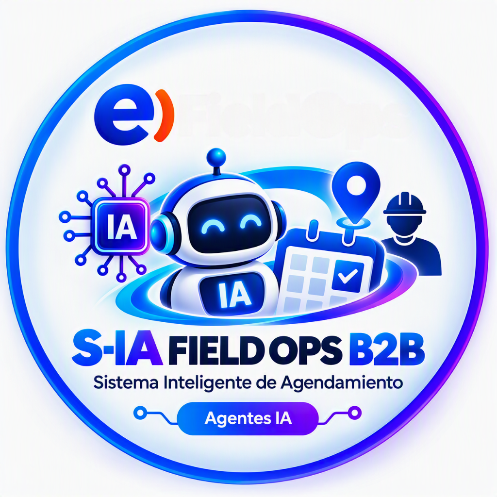

De una caja negra
a una plataforma que aprende
Sistema Inteligente de Agendamiento
Un sistema que nadie podía tocar
Una sola plataforma End to End
Lo que cambia en la operación del día a día
El proceso de agendamiento es el mismo. Lo que cambió es la herramienta que lo soporta, mas moderna y con tecnología que responde al ritmo del negocio. — y con ella, el trabajo diario de cada equipo.

Eliminar un riesgo
Una plataforma crítica sin soporte es una falla esperando ocurrir
Unificar el agendamiento
Implementación y Averías planifican sobre la misma capacidad
Hacerlo medible
Tiempos, causas y desempeño se registran solos
Habilitar la IA
Construir el insumo que hace posible la inteligencia artificial
Cada atención deja algo atrás
Lo que la inteligencia artificial hará posible
Agrupación de cortes
Quince reclamos de la misma zona no son quince averías: son un incidente de red. El sistema lo reconoce y despacha una sola cuadrilla.
Validación por imagen
El técnico no podrá cerrar la orden si la fotografía muestra una instalación incorrecta o incompleta.
Predicción de averías
El modelo identifica qué clientes están por fallar, antes de que levanten el reclamo.
Copiloto del coordinador
Sugiere la contrata y el técnico con mejor historial para cada caso.
Optimización de rutas
Más atenciones por día con el mismo personal, ordenando las visitas de cada turno.
Aviso anticipado
Un mensaje al cliente antes de que exista el reclamo.
Qué significa esto en capacidad y eficiencia
| Área | Dedicación actual | Costo mensual |
|---|---|---|
| Averías | 2 recursos de agendamiento | S/ 7,800.00 |
| Averias | Costo asociados a reprogramación | S/ 4,000.00 |
| Total | S/ 11,800.00 / mes |
OKR 1 — Transparencia operativa y costos
- Menor dependencia de la gestión manual
- Trazabilidad completa del agendamiento
- Información disponible para seguimiento
- Optimización del costo operativo
historial trazable
OKR 2 — Incremento de eficiencia operacional
- Menor tiempo dedicado a agendar
- Mayor capacidad de atención
- Reducción de tiempos operativos
- Mejor utilización de recursos técnicos
tareas de agendamiento
Y cada atención que se cierra hoy lo hace un poco más inteligente que ayer.
Sistema Inteligente de Agendamiento · Equipo DEV AUTOMATIONS— FIELD OPS B2B